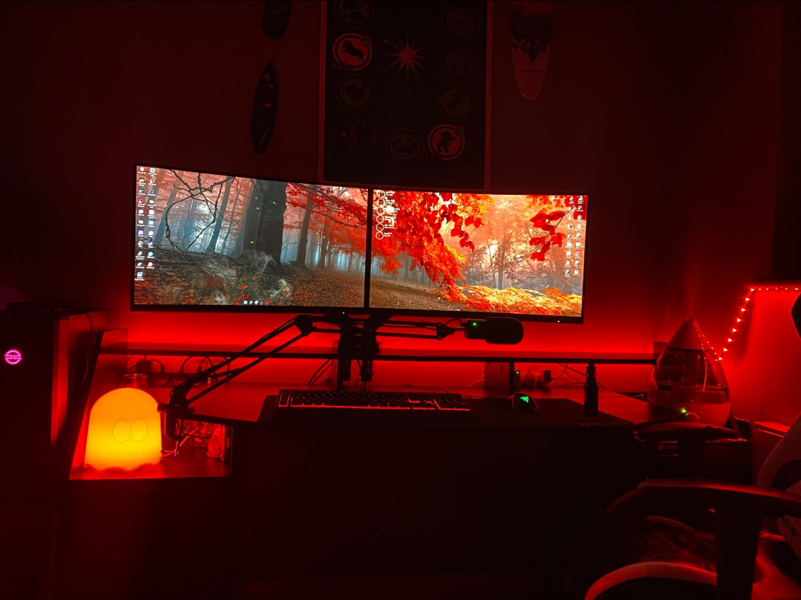

The purpose of the teamworking project was to allow us to workcollaboratively within a group to plan, design, implement, test, andevaluate a computing project.We had to produce a project in response to a project brief. The project hadto be completed by a project team working together, but with each of ushaving defined areas of responsibility.The project allowed us the opportunity to demonstrate the knowledge andskills we have accumulated across the academic year. It also gave us theopportunity to further develop key skills in planning, decision making,working with others, communications, implementation, problem solving,time management, testing and evaluation.
